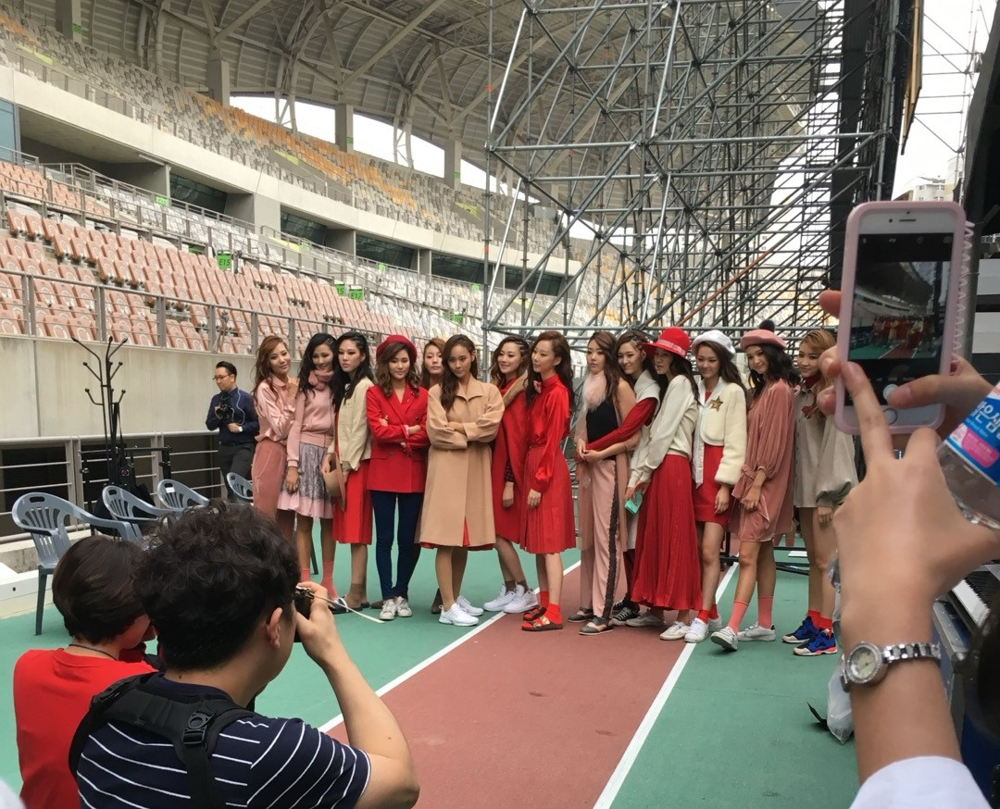
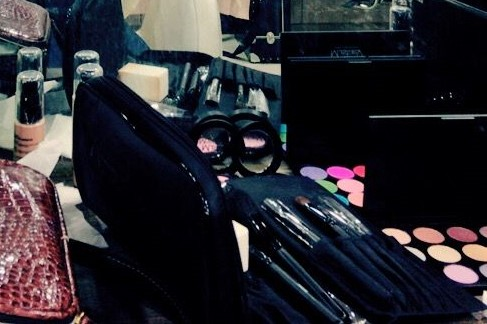
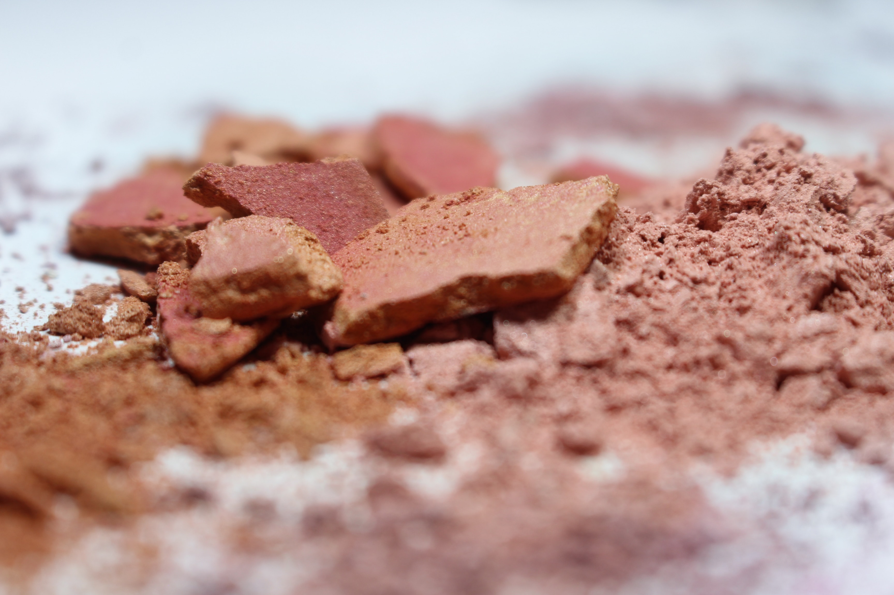
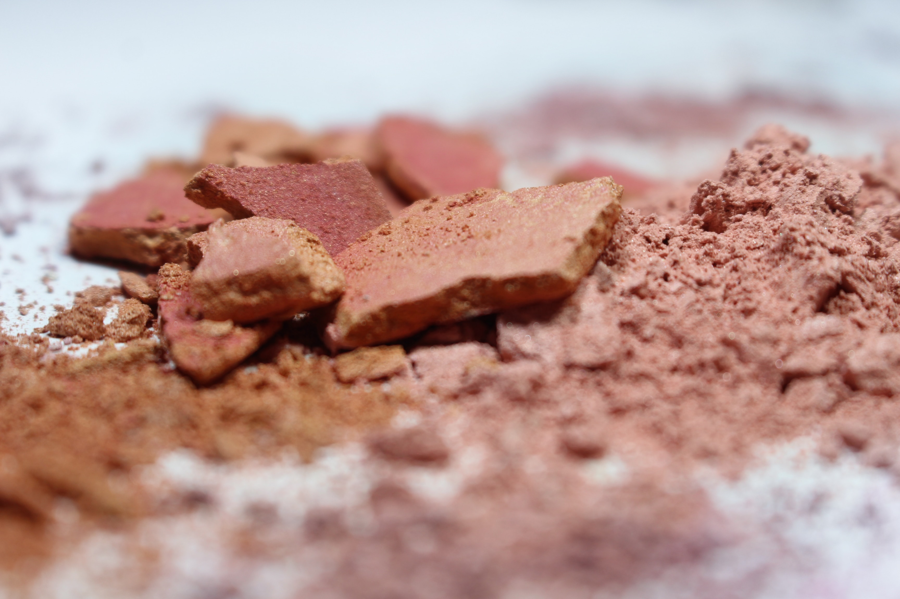

2018-2019
"MAKEUP & PERSONAL COLOR"
"MAKEUP & PERSONAL COLOR"
 

MAKEUP & PERSONAL COLOR
2016-2018 / 2018-2019
메이크업을 전공하였으며, 약 1년간 메이크업 아티스트와 퍼스널컬러
보조강사의 경력이 있습니다
미용을 좋아해서 시작했지만 일을
해보니 적성에 맞지않아 다른 분야로 이직 준비를 하는 1년이기도
했습니다🥲
"무식하면 용감하다!" 라는 말 그대로 아는거 없이
단순히 툴만 배워서 엉망진창인 포트폴리오를 만들었고
어찌저찌 애증의 미용분야를 탈출했습니다..!